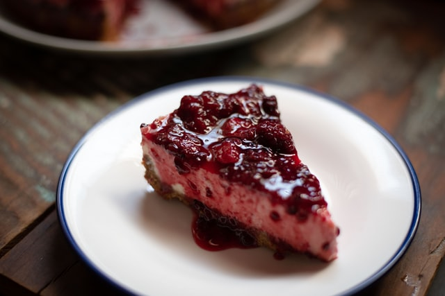

Cheesecake

Creamy dessert that everyone will like!
Cheesecake is an easy family dessert that can have lots of different
toppings: fruits, chocolate, etc.
Ingredients
- Neutral cheese 400gr
- Creme 400gr
- Biscuits 200-300gr
- Sugar (up to you, everyone has different tastes)
- Milk 100ml
- Butter 125gr
- Fruits (or chocolate) ~300gr
Steps
- Cook the friuts, if you prefer that as a topping, or melt the chocolate
- Melt butter, then mix it with milk and biscuits.
(Biscuits can be anything, in our case Plazma or Oreo)
- Place it at the bootom of the cake mould
- Mix the cheese with the creme, and add some sugar
- When its nicely mixed, add gelatine so that it can harden
- Put the creme and cheese mix in the cake mould and leave it in the fridge for a while (more than an hour)
- When the topping cools off a bit (and everything in the cake mould as well), put it on top of the cake
- And voilà, your delicious dessert is ready!